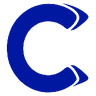
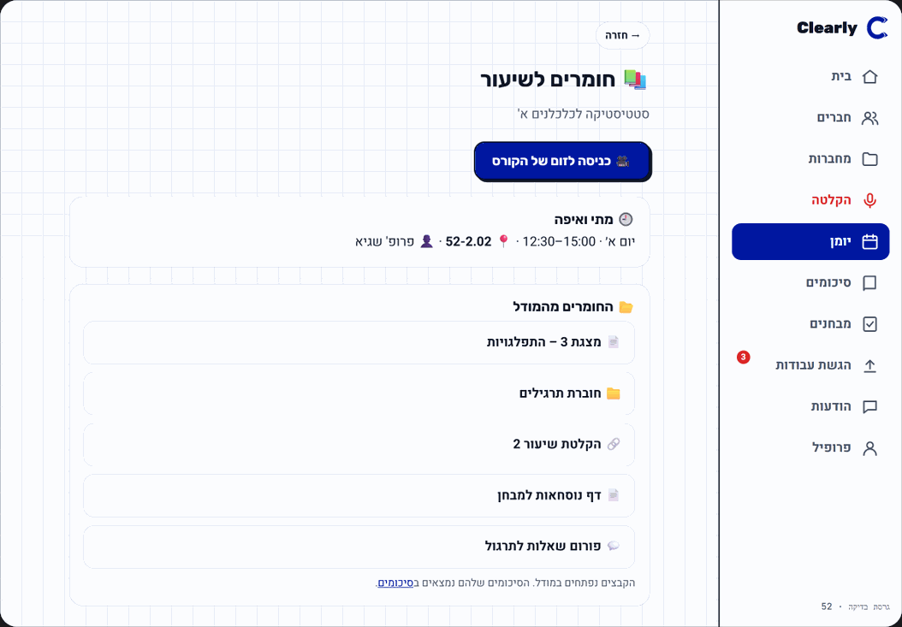
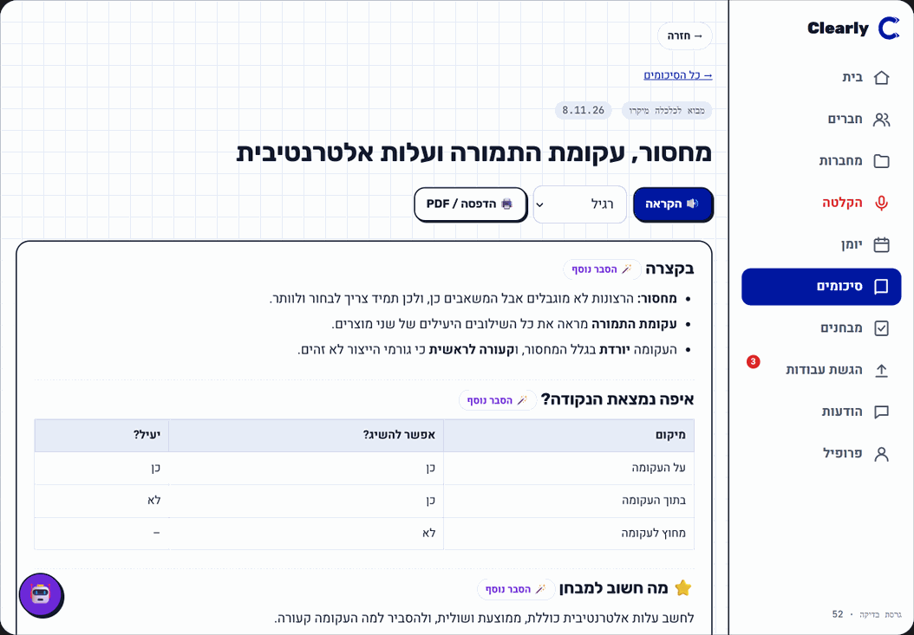

פותחים חשבון
באייפד, באייפון או בטלפון, עם המייל של האוניברסיטה. עונים על 5 שאלות על איך אתם לומדים.

Clearly הרשמה ל-Early Accessלסטודנטים באוניברסיטאות שעובדות עם Moodle
מחברים את המודל פעם אחת, ואנחנו עושים את כל השאר: סיכום אישי לכל שיעור, מבחנים, והכיתה שלכם במקום אחד.
מכירים את זה?
כותבים, מפספסים, ונשארים עם חצי מחברת וחצי שקופית.
ועכשיו רודפים אחרי סיכומים בקבוצות, ומקווים שמישהו יענה.
כתוב כמו שהוא לומד, לא כמו שאתם לומדים.
ב-Clearly הסיכומים של החברים מהכיתה כבר מחכים לכם. רק באישור של שני הצדדים.
מסמנים קורס משותף עם חבר, וכל סיכום של אחד מכם מופיע גם אצל השני.
בקשה אחת, וכל החברים מהקורס מקבלים התראה.
מעלים פוסט, תמונה של הלוח או קובץ. עושים לייק, שומרים ומגיבים.
מדברים עם חברים מהכיתה. מי שאינו חבר נכנס ל"בקשות", ואתם מחליטים.
עונים פעם אחת על 5 שאלות קצרות, וכל סיכום נכתב לפי איך שאתם לומדים.


וכל השאר
מחברת, הקלטה, יומן, מבחנים והגשות. ועוד: מחשבון ציונים לפי המשקלות, הקראה בקול, הדפסה ל-PDF, מצב כהה, וחיפוש אחד בכל החומר.
הרשמה ל-Early Accessבאייפד, באייפון או בטלפון, עם המייל של האוניברסיטה. עונים על 5 שאלות על איך אתם לומדים.
היום החיבור עובד דרך תוסף קטן לכרום במחשב, ובקרוב ישר מהטאבלט. אין מחשב? מעלים את המצגת.
כל שיעור מגיע מסוכם, עם מבחן קצר. מוסיפים חברים מהכיתה, ושואלים את העוזר כשמשהו לא ברור.
רוצים לראות את החיבור לפני?
סרטון: חיבור למודל ב-3 דקותכן. אין סיכומים מוכנים מראש. כל סיכום נכתב מהחומר של הקורס שלכם, ולפי איך שאתם לומדים.
בכל מוסד שעובד עם Moodle. כרגע בדקנו באוניברסיטת אריאל ובאוניברסיטת בן־גוריון.
מתקינים תוסף קטן בכרום במחשב, פעם אחת. יש סרטון של פחות מ-2 דקות ומדריך בכתב: clearlyapp.io/guide.
לא. החיבור משתמש בהתחברות שלכם בדפדפן, ואנחנו לא רואים ולא שומרים את הסיסמה.
רק אתם. סיכום מופיע אצל חבר רק אם שניכם סימנתם "אותה כיתה" באותו קורס, ואפשר לבטל בכל רגע.
הם משמשים רק כדי לכתוב לכם סיכום אישי, ולא נשמרים אצלנו. משתפים רק סיכומים ותוכן שלכם, אף פעם לא מצגות או מבחנים של מרצים.
בתקופת הבדיקות הכול בחינם, עם מגבלה יומית על סיכומים ושאלות לעוזר. המחיר אחרי ההשקה יפורסם כאן.
פותחים את הקישור באייפד או בטלפון, מוסיפים למסך הבית, ויוצרים חשבון. שתי דקות.
בהרשמה מאשרים את תנאי השימוש ואת מדיניות הפרטיות. שאלה? clearlyappsupport@gmail.com